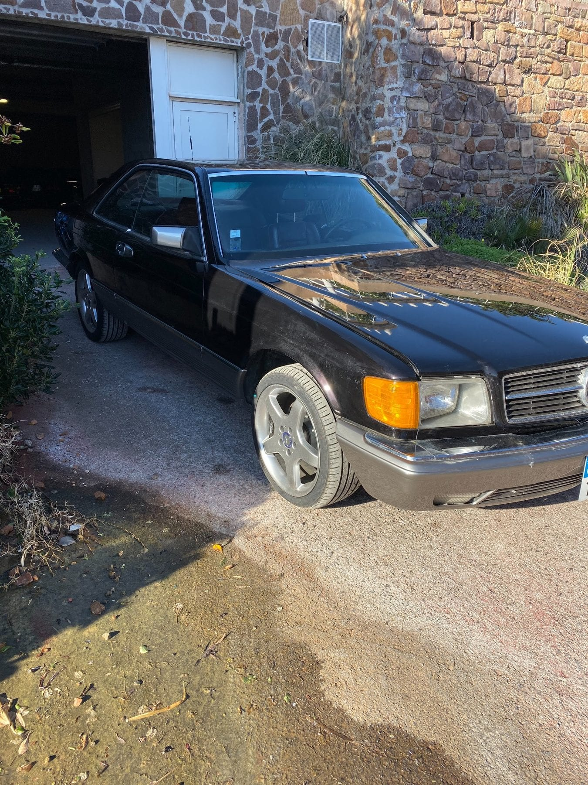
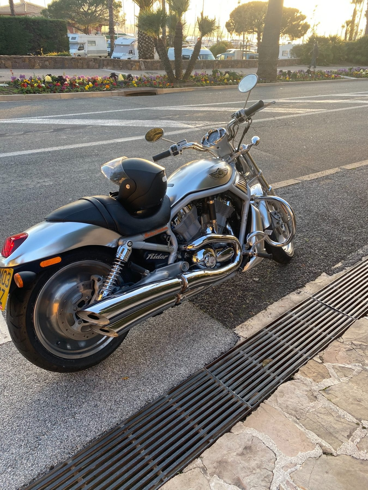
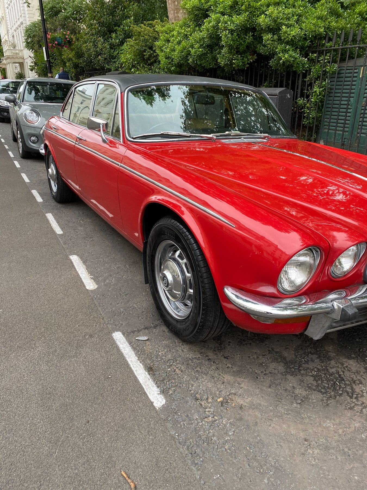
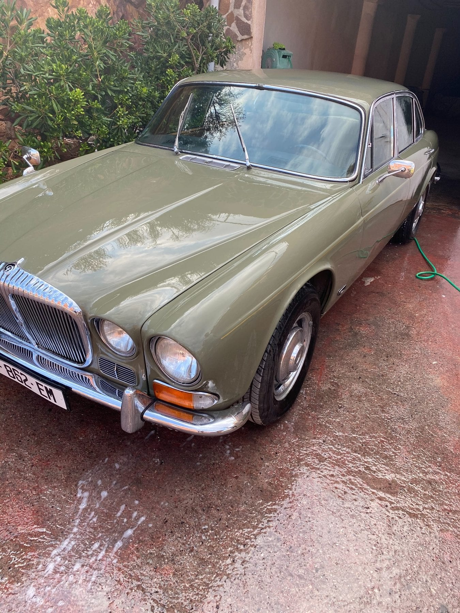
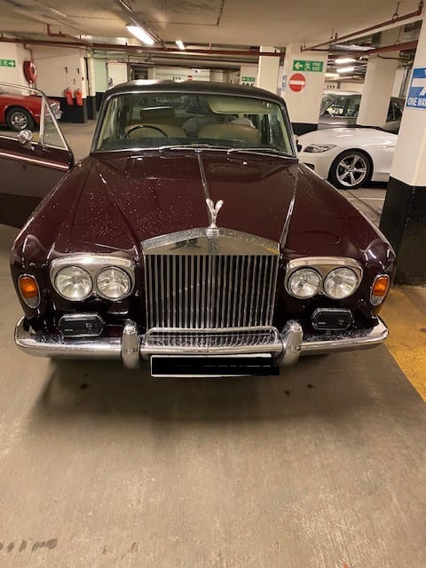
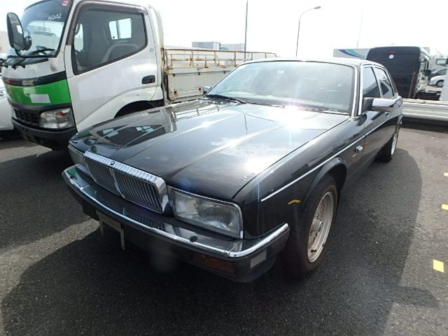
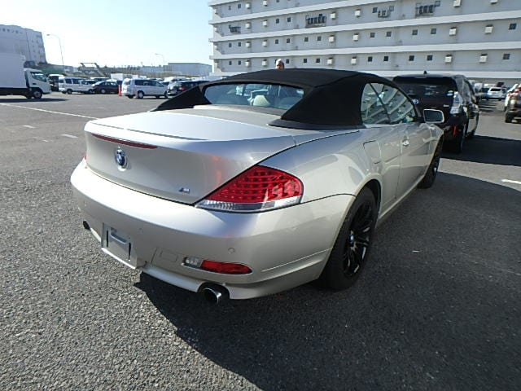

Market Research Report: The Bespoke Car
Analysis of the global collector car market and investment opportunities
Idea Overview
The Bespoke Car (thebespokecar.com) is an investment-grade collector car concierge serving collectors and demanding buyers across France, Italy, and Europe. The business provides buy-side mandates (sourcing, selection, due diligence, negotiation), sell-side mandates (premium presentation, buyer targeting), and full import logistics from Japan, Korea, North America, and Europe.



Market Validation
The collector car market is booming. Global auction and online sales hit $4.8 billion in 2025, up 10% YoY. The global vintage car market is valued at $29.6B (2025) and projected to reach $52.8B by 2034 at 6.6% CAGR. The European classic cars market specifically is gaining strong momentum.
Japanese Classics: The Hottest Segment


Value Appreciation 2019–2025
Japanese classics are the hottest segment. Models like Nissan Skyline GT-R and Honda NSX have delivered 3x–5x value appreciation between 2019 and 2025. Younger collectors (Gen X and Millennials) are driving demand for 1990s–2000s performance icons. Hagerty's 2026 Bull Market List leans heavily toward this exact era.
Why Now?
EU–Japan Free Trade Agreement
Eliminates import tariffs on Japanese vehicles
Superior Maintenance Standards
6,000 km service intervals, less rust (no road salt), lower mileage (6–8,000 km/year average)
2026 Eligibility Opens
2001 production models become eligible (Honda S2000 AP1, Mazda RX-7 Spirit R) with 30%+ projected appreciation
Market Transition
Shifting from pre-1970s classics toward modern classics from the 1990s–2000s — exactly where Japanese cars dominate
The Bespoke Car's Differentiators
"Investment-Grade" Positioning
No competitor frames car acquisition as a structured investment process with formal due diligence (PPI reports, technical risk documentation)
Strategic Presence
Proximity to Europe's wealthiest collectors: Monaco–Nice–Cannes corridor, Italy, Canada, North America
Dual France + Italy Network
Workshop and partner network across both countries, ensuring technical expertise and quality of service
Buy-Side AND Sell-Side
Full lifecycle advisory — not just import logistics
Multi-Source
Japan, Korea, North America, and Europe — not Japan-only like most competitors

